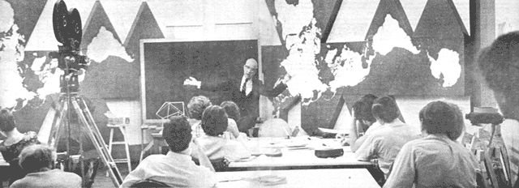

World Game
World Game: a unique experiment to develop a computer coordinated model of planet earth - used to "play the world" and develop ways of running the future for the benefit of mankind.
By the Mother Earth News editors
November/December 1970
Medard Gabel was speaking a bit hastefully: "We can make everybody in the world a success by 1980 and we have the proof to back it up," he'said. "So when we say that air pollution could be eliminated from Spaceship Earth by 1980, that's exactly what we mean.
"If your priorities are high enough, you can put a man on the moon. If your priorities are to get electrical energy to the world, you can find the money. The wealth is there."
Gabel, a 24-year-old design science student at Southern Illinois University, was later to amend his remarks, noting that "proof" is an ambiguous term-some people won't have anything proven to them no matter how much evidence is presented-and much of his reference material was in files and would take a couple of months to assemble.
But Gabel was neither exaggerating nor boasting in the claim that he and his associates could devise a plan to make every human being a material success within the next decade. He was speaking with the intuitive enthusiasm which characterizes a company of future oriented, inter-disciplinary technological explorers who are participating in the World Game, a unique experiment to develop a computer coordinated model of planet earth-complete with resources, history, human attitudes and social trends-that can be used to "play the world" and develop ways of running the future for the benefit of all mankind.
The experiment is being conducted in more than 20 universities and colleges in the United States, Canada and Europe but its center is housed in the basement and first floor of a monotonous two-story brick building surrounded by a dusty, graveled parking lot, about six blocks off-campus from Southern Illinois University in Carbondale, Illinois.
It is in this office that Gabel works with Tom Turner, 34, a former Dominican brother who is current director of research and development for the Game; Ed Hauben, 23, an architect with bushy hair and beard and a distinct Bronx accent; Mark Victor Hansen, 22, a graduate student at SIU with several inventions to his credit; Mike Paterra, 27, a high strung game theorist who smokes heavily and drinks a lot of coffee; Ray Frenchman, 22, a design student who refused military induction two years ago; and 11 other persons who research, do secretarial work, maintain inter-game communications, silkscreen posters, analyze information and perform numerous tasks for divining an efficient process for managing Spaceship Earth. Each of them has a unique conception of what the Game is.
I think it's the logical alternative to most of the organizational problems with which the world is confronted," Turner said. "We start out with the basic premise that all the problems of today's world are in some ways brought about by compartmentalized thinking, that boundaries and territories create great barriers between people and that most of the waste of resources is brought about by adherence to these political myths, these political boundaries.
"We're going to have to think of the earth as one island, one nation, one boundary, and nothing can enter into our consideration of the world as a sub-divided territory with fences," he adds.
"World Game is an opportunity to create an understanding of how mankind could exist in Utopia," said Hauben. "I think humanity is taking steps to that end and World Game is dealing with the consciousness of taking those steps in the right direction."
According to various bits of office literature, the Game is: "A developing scientific means for discovering the expeditious ways of employing the world resources in a way which will render a higher standard of living for all mankind . . . a means of accumulating facts, information and statistics related to world resources . . . a way of discovering trends in the use and misuse of resources . . . a network for relating these trends and developing a logical sequence of events to show how a future state might evolve.
Or as Gabel would have it: "World Game is making sure that everyone has a possibility of being happy. It's seeing to it that certain necessities are being provided for everyone to realize themselves, to be aware of themselves, to be happy. World Game is a way of realizing these things for Spaceship Earth."
The Game has been in operation for a little more than one year and already predicts a glorious, prosperous future for humanity. Much of this prophecy stems from the massive adoption of the scientific philosophy and discoveries of the Game's mentor R. Buckminster Fuller.
Fuller, a 75-year-old design scientist, inventor, architect, philosopher and poet, is the archetypal Yankee inventor. His heritage consists of eight generations of Boston idealists, Unitarian ministers, and transcendental thinkers. Although five generations of family men preceding him had been Harvard graduates, Fuller's Harvard career consisted of getting kicked out of the university twice for "youthful excesses and lack of application." Both dismissals cast him into circumstances which markedly affected his thinking and lifestyle.
On the first occasion, he departed for a job in Canada as an apprentice to a group of English and German cotton mill machine fitters. Starting with a bare new building in a new land and taking part in its mechanical installations and subsequent running, he gained-at first hand-dawning awareness of a major economic pattern factor: That of "addition of value (or wealth) by manufacture" effected between raw and finished goods and gained by the rich synergetic mixture of technology and energy.
Following his second dismissal, Fuller joined the Navy. One day, in 1917, while standing on the deck of his ship idly musing at the bubbles left in the vessel's wake, he recalled learning in school that in order to measure a sphere (which is what a bubble is) you had to employ pi, an irrational number. The thought occurred to him that nature probably didn't function in terms of irrational numbers and that perhaps a better system of measuring and discribing the universe could be discovered.
But research into a new measuring system was not to take place for several more years. The 20's became a time of crises in Fuller's life. His first daughter died in 1922, he began drinking heavily and in 1927 he lost his job with a building block company. Despondent, Fuller gave serious consideration to suicide but rejected it while standing on the shores of Lake Michigan in Chicago, saying to himself: "You do not have the right to eliminate yourself, you do not belong to you. You belong to the universe."
Since then Fuller has dedicated himself to a search for the principles operative in nature and ways to put them to use for "mankind's comprehensive success in the universe." From the quest came a set of about 200 generalized principles (accompanied by numerous incidental discoveries), many of which he subsumed from the work of fellow scientists; others, he uncovered for himself. Many of these principles and discoveries-particularly in physics, systems and trending-are basic to the operation of the World Game.
In the realm of physics, twentieth century scientists have all but destroyed the Newtonian view of the universe-which had ruled supreme for nearly two centuries with scarcely an opposing voice-in which everything happened precisely according to law; a compact, tightly organized universe in which the whole future depends on the whole past.
By the turn of the century, numerous researchers were finding this approach inadequate to handle the data of galactic or atomic physics. In 1919, Franz Exner asserted that it was quite possible that nature's laws are of statistical character, and that the demand for absolute law goes beyond the reach of experience. He was supported by Willard Gibbs, Ludwig Boltzman and many other physicists.
In 1927, this view was given much substance by W. Heisenberg when he formulated the Principle of Uncertainty, sometimes called the Principle of Indeterminacy. This called attention to indeterminism in a way that could not be overlooked by showing how the uncertainty in the universe could be expressed with great exactness in centimeters, grams and seconds.
Part of the universe's uncertainty stems from the fact that it is impossible to observe something without in some way affecting that which is being observed. If electro-magnetic waves are used to explore an atom, those waves will have an affect on the atom. Thus, neither organic nor mechanical means of viewing something yield exact perceptions.
Another source of uncertainty is simply that in the real universe, identical causes do not necessarily yield identical results. But the different results are not entirely random. What is claimed by physics is that if an experiment is repeated a million times and the frequency with which the different possible results occur is registered, they will in a second mil lion experiments repeat themselves with exactly the same frequency. Thus, of 100,000 trials, 99,000 may produce one result and 1000, another. And in the second 100,000 trials the pattern is repeated.
Quantum physics thus demolished two pillars of the old science: Causality and determinism. Albert Einstein continued the battle and attacked time, space and the simultaneous universe.
In 1905, when he was just 26 years old, Einstein published a short paper rejecting the idea of space as a fixed system or framework. He concurred with what the great German mathematician Leibnitz saw two centuries ago: That space is "the order or relation of things among themselves." Without things occupying it, space is nothing.
Along with absolute space, Einstein discarded the concept of absolute time-of a steady, unvarying, inexorable time flow streaming from the infinite past to the infinite future.. He considered time, like the sense of color, to be a form of perception. Just as there is no such thing as color without an eye to discern it, so an instant is nothing without an event to mark it. And just as space is simply a possible order of objects, so time is simply a possible order of events. For Einstein, time and space coordinates are only the elements of language used by the observer to describe his environment.
A third perception of the universe to topple before Einstein was the idea that the universe, as it is sensed by an observer, is happening all at the same time. Man cannot assume that his subjective sense of "now" applies to all parts of his perceived environment.
For example, a complicated situation arises if we try to ascertain what is happening on the star Arcturus "right now." Arcturus is 38 light years away and when we look at it "now" in 1970, we are actually seeing a ghost; the appearance of something as it existed in 1932. Whether Arcturus exists "now," nature forbids us to know until 2008.
The philosophical extensions of these attitudes have yet to be developed. By dealing in terms of statistics and probabilities, by abandoning time, space, and simultaneity and by admitting margins of uncertainty, science yields up the ancient hope that it can forcast-with absolute exactness-the history of the universe for all time. One product of this surrender is a new argument for the existence of free will. For if physical events are indeterminate and the future is unpredictable, then perhaps that unknown quantity called "mind" may yet guide man's destiny in the universe.
R. Buckminster Fuller has grasped the implications of these developments and has incorporated them into the body of his philosophical thought. He defines the universe as "the aggregate of all humanity's consciously-apprehended and communicated experience with the nonsimultaneous, nonidentical, and only partially overlapping, always complementary, weighable and unweighable, ever omni-transforming event sequences."
Fuller also contends that humanity has arrived at the threshold of "an entirely new philosophical era of man on earth" and argues that man in fact has the ability to play a conscious, active role in his own evolution . . . a prospect he claims was opened by Einstein.
"In the famous first law of dynamics, Newton had said that a body persisted in a state of rest or constant motion except as it was affected by other bodies; he was assuming that the normal condition of all things was inertia," Fuller says.
"Einstein realized that all bodies were constantly being affected by other bodies, though, and this meant that their normal condition was not inertia at all but continuous motion and continuous change. The replacement of the Newtonian static norm by the Einsteinian dynamic norm really opened the way to modern science and technology, and it's still the biggest thing that is happening this moment in history."
Three additional principles, this time outside the exclusive realm of physics are necessary to the understanding of World Game. These are synergy, ephemeralization, and trending.
Synergy is "behavior of whole systems unpredicted by knowledge of its parts or subsystems." A simple example of such behavior is found in metal alloys. If the abilities of standard units of cobalt, nickel and iron to withstand pressure were tested and added together, the sum of their strengths would be approximately 250,000 pounds per square inch. The extra 100,000 pounds psi is a synergetic effects
Gestalt psychologists have always been aware of synergetic effects as is shown in their consideration that "the whole human personality is more than the sum of its parts." And Soviet filmmaker Sergei Eisenstein noted in his theory of montage that two strips of film, when juxtaposed together, produced an effect that was greater than the effects of the individual strips combined. Once the awareness of synergy develops, it begins to appear everywhere.
Synergy as applied to Spaceship Earth means that the world is best looked at and studied as a single system. If its separate parts-i.e. nations-are examined and all that knowledge combined, there will still be something missing. The synergetic effects which can be seen only in whole systems will not appear.
Ephemeralization means "doing more with less." It is readily visible in technological trends and has been strongly exercised in communications and transportation. For example: A quarter-ton Telstar now relays as many messages as 150,000 tons of transatlantic cable; Fuller's geodesic dome house utilizes 30 tons of material, one-fifth the amount of most homes using traditional architecture; one miner, with hand tools, can produce about three tons of coal a day but with proper equipment can produce as much as 50 tons per day.
Since ephemeralization is a constantly evolving process, much of mankind's resources are now trapped in anachronistic machinery. If the entire paraphernalia of civilization's present mechanical equipment was scrapped and the resources reinvested in modern, ephemeralized equipment the standard of living which the United States now enjoys could be extended to half the human family. This could be done without further depleting earth's raw materials.
Trending is a mechanism used by Fuller to observe certain events which are not immediately presented to the human consciousness. Fuller noted that many events are spread out over time and to make them indirectly visible a means of condensing time must be found, such as plotting graphs or making films in which one-second of film time is given to represent some many years of real time.
One noteworthy trend is found in the relationship between industrialization and population growth. Fuller has noted that the more industrialized a country becomes, the more rapidly does its birthrate decrease. North America, Europe and Russia's birthrates are all decreasing and tend toward swifter decline. The increase in longevity in those countries through control of diseases is alone responsible for temporary population increases.
China will probably accomplish its prime industrialization by 1974. China's birthrate, Fuller predicts, will henceforth decrease rapidly. India, Africa, Central and South America will achieve full industrialization by 1980 when-at the most disturbing prognostication rates-world population will have reached only (Fuller's only) five billion, its final peak before full industrialization's declining rate sets in.
Armed with the awareness of synergy and of trends in ephemeralization, Fuller was able to launch an attack on two erroneous principles which have long been guiding decision makers in various world societies.
The first was Thomas Malthus' 1810 dictum that birthrate was outpacing resources development and there was not enough material to go around. This meant that men were basically in competition for the available food, water and raw materials and fit hand-in-glove with Darwin's survival of the fittest theory. Mankind was seen to be fundamentally in a competition from which only the strongest would emerge.
The Malthus-Darwin dicta underlies current (as played by nations and their "leaders") game theory, which was developed by the late Princeton professor Jon Von Neuman. The theory postulates that two or more people-or groups of people-who employ strategies directed towards attaining a goal, follow certain behavior patterns which can be mathematically represented. Monopoly, football, and the IndoChina War are all considered "games." Using this theory, one person-or team-can make predictions about the other players' behavior and so anticipate better strategies.
Von Neuman based his theory on competition and the assumption that what goes into one person's pocket must come out of another's. My gain is your loss. If the two are combined, they neutralize and their collective sum would be zero. Thus, this is called "zero-sum gaming." Such lovelies as the Pentagon and the Defense Department currently use zero-sum gaming to plan strategies.
By watching numerous trends, Fuller found that with extant technological means, more than enough resources were available to amply provide for everyone.
"I saw that if that could be done, then the theory of Jon Von Neuman's war gaming, which holds that ultimately one side or the other must die, either by war or starvation, is invalid," Fuller said last year in Denver. "Therefore, I saw that we had an heretofore unconsidered alternative way to play the world game in which, as with mountain climbing, the object would be to find all the moves by which the whole field of climbers would win as each helped the other so that everybody successfully reached the mountain top."
In 1964, the United States Information Agency asked Fuller to participate in the design of a building and exhibition for the U.S. pavilion for Expo 67 in Montreal. Among Fuller's many proposals was that a football field-sized world map be built that would disclose the continents arrayed as one world island in a one world ocean with no breaks in the continental contours. The great map would be wired throughout so that mini-bulbs, installed all over its surface, could be lighted by computers at appropriate points to show various world conditions, trends, events and resources.
Fuller further proposed that on this map of Spaceship Earth, a great world logistics game be played by introducing into the map's computers all the known inventory and whereabouts of the various metaphysical and physical resources of the earth. (This inventory, incidentally, was begun by Fuller some 30 years ago and is now housed at his Southern Illinois headquarters.)
All the inventory of human trends, known needs, and fundamental behavior characteristics would also be entered into the computer and teams, or individuals, would undertake to "play" the "World Game" to develop and test theories of how to make the total world work successfully for all humanity.
The idea was rejected by the United States' Expo architects and lay dormant for five years. Then last summer the New York Studio School, an art institute adjacent to Greenwich Village's Washington Square, received a Rockefeller Brothers' grant for a special seminar of its own choice. The school, in turn, decided to bring in Fuller to do anything he wanted.
What resulted was an initial 50-hour "rap session" delivered by Fuller and a decision to move the World Game from an abstraction to a process by simply beginning to gather and interrelate the material necessary for world logistics. The student excitement has proven to be the mainstay of World Game development to this day.
"Most of the initiative has come from the students," Tom Turner says. "All of the planning, all the really determined effort, all the real dedication has come from students; all of this is a product of their own inspiration and dedication.
"Now that the World Game is being recognized as a success and of possible use to things like the Federal Government and industry, we're starting to get an influx of concern and interest from very high-powered people with the real intent of taking the initiative away from the students and turning the Game into a government laboratory or a corporation. We are fending these people off as best we can."
The 26 participants in the Studio School seminar soon launched a second stage of World Game development. They experimented with ways of representing and interpreting data, and began to define World Game goals.
Medard Gabel and Ed Hauben were members of the Studio seminar and are 'currently on the World Game staff in Carbondale. While I was at the Game Central, they showed me slides and other displays which help explain the functioning of the game.
"Our conceptual reference for this thing is that we can look at earth as a biological entity," Gabel said while showing slides in the simulation room. "It was this one dymaxion map (a unique unfolding of the earth devised by Fuller) and we could see how it interconnected as a land mass. But once we started displaying the electrical energy grid and the transportation channels, it became apparent that the world looks like a biological organism. You can equate the electrical energy network with the nervous system of earth and the roads, railroads, airways and shipping lanes with the arteries. Some of the strategies for making earth more successful is to hook up these different arteries and nervous systems more efficiently."
Plotting strategies to make earth more "successful" called for a definition of success. The term was tossed back and forth and the concept of the bare maximum evolved. A bare maximum is the most of a particular resource that a human being will use under optimum conditions. It is something that goes into man to help him realize his maximum potential rather than his minimum subsistence level.
"In food consumption, the highest figure we came into contact with as far as calorie consumption is concerned was that of a hard laborer who uses 3500 calories per day," Gabel said "So 3500 calories per individual per day became our bare maximum. If we could assure everybody in the world that many calories, then we would term our strategy a success.
"Not that everyone would have to eat that much," he added. "They simply would have access to it."
The Studio seminar established bare maximums in eight categories: Energy, food, health and medical care, housing and shelter, communication, transportation, education and recreation; with the two most vital being food and energy.
To gather information about these subjects, they turned to United Nations statistical yearbooks, the United States Science and Technology Index, Goods's World Atlas, the World Design Science Decade documents, works cited in the Whole Earth Catalog and numerous other sources.
"We defined external and internal metabolics," Gabel said, and found that by taking care of man's external metabolics-electrical network, communications network and the like-we could insure his internal metabolics-calories and protein.
"With food, for example, we found that in India 25 percent of the food rots or is eaten by mice. We also found that it wouldn't do much good to ship food from the United States to India because it would rot and spoil in a few days.
"So what India needs before she can get food-and this goes for Africa, South America and China-is electrical energy. Some way of getting it to the people."
At this point Hauben took over the conversation. Once he and Gabel are assured that the listener understands their basic working concepts, they begin to talk faster and throw more bits of data into their statements. An implosion of information results.
(According to World Game thinking, every human being is entitled to their bare maximum of these commodities for free. No one should have to work for the goods or services necessary for existence.)
"For electrical energy, we took the United States as a base of the largest quantity consumed, extrapolated current use to the year 2000 and extended its availability to the whole globe," Hauben began. "In the U.S. now there are 6700 kilowatt hours per individual per year available. In the year 2000, we extrapolate it to 15,000 kwh, this would be a successful bare maximum acheivement."
Working with that bare maximum, the Studio School seminar gathered information on current means of generating and transferring electricity. They projected various alternatives into the future, rejecting some and reassigning others to further research. The process is indicative of how the World Game works.
"We started out with the idea of utilizing hydroelectric plants," Hauben said. "We found that working with an average size plant, we would have to dam 3000 rivers, and we can't do that, the ecological consequences would be fantastic. So we reached what we call a 'crises point'
"If we use and extend current means to solve a problem and we reach a point of disaster where we know those means won't work, we call that a 'crises point' and we have to find new means," he explained.
"So we came back to the present and studied how electricity is being used and found it is only utilized at capacity 50 percent of the time. We discovered that if we could transmit electricity to wherever it was needed on the whole planet, we could immediately pick up a 50 percent increase on the total system. That's a good case of ephemeralization. Doing more with less.
"Now, we still considered that impractical because of the amount of metal resources such an electrical system would use. So we're completing studies on income energy sources-sources of power that don't deplete themselves, like wind, tidal currents and sun power.
"But part of what I'm illustrating is our basic four step process," Hauben said. "First, it's a matter of going out and researching something, getting it inventoried. From the inventory, we look at the information through time so we hav e a trend.
"Then we ask 'What are we going to do with the information?' and from that we develop what we call a strategy. We try to determine priorities and look at all the questions involved with a certain plan of action. Finally, we restate the problem-if necessary-and follow the plan of action into the future."
The completed plan of action for the electrical energy strategy combines the transmission network with increased hydroelectric plants and utilization of income energy sources. The plan, which has not been endorsed by any organization which could put it into effect, calls for construction on the system to begin this year. By 1973 North America would be hooked up to Northeastern Siberia via the Bering Strait and Western Europe would be linked to Eastern Europe and Russia.
In 1974-76, hydroelectric plants in South and Central America, Africa and China would be built and integrated into the network. From 1977-1988 the first tidal hydroelectric plants in Nova Scotia, Alaska, Greenland, Japan, China, India, Australia, England and South America would be completed and integrated. The rest of the river hydroelectric plants would also be finished.
This would assure all mankind the present supply of electricity Europe now enjoys; 2000 kwh per capita per year, with the overall average at 3613 kwh. The bare maximum goal of 15,000 kwh per capita per year could then be achieved by continuing this plan for the remaining 20 years.
After the seven weeks at Studio School, many of the students elected to stay with the World Game. Several of them joined Fuller's staff at Carbondale; others returned to their own campuses and organized Game centers.
The World Game Central does not issue orders or instructions to the many centers, and it makes no demands on the players' time. "We absolutely do not try to manage any activity at all outside this building." Turner said. "We offer information and we are an information central. People give us data which we assimilate and disperse to everyone who wants it. World Game information will be available to everyone, right down to the private individual. We'll have no classified data."
Despite the Game's potential, promise and its massive conglomeration of inter-disciplinary expertise, not all its sailing is smooth and easy. It has hit some rough waters in the areas of finance and acceptance.
Carbondale Central's budget for the last year was $110,000, of which 75 percent was financed by SIU with Fuller making up the balance. All the other Games must seek out their finances themselves. The success of the World Game will obviously call for more funds-which are being offered from several sources-but there are attendant risks which the staff wishes to avoid.
Government and industrial organizations have become aware of the magnitude of brain power at the Carbondale Central and would like to seduce the energy to other projects. "We're getting people who say 'if you would only come around to our way of thinking, you could have $12 million by tomorrow,' " Turner said. "A Central Intelligence Agent came by once and suggested we work together but we explained that we did not want to tie our kite to the tail of what we think is a sinking ship."
In order to fend off vested interests encroachment, the Central has adopted a policy which states that no more than 10 percent of the Game's finances, during any one year, can come from any one country or corporate body and no individual can acquire controlling interest in the Game's activities.
In addition, funding legislation pending in Congress provides that services and information from the Game shall be available to international organizations and private persons, organizations and institutions, as well as federal, state and local governments. In part this is mechanically necessary for the Game's effective operation which is set to harmonize the use of resources on an international basis. The simulation would not work if its output was limited.
Monetary problems, though, were not nearly so unexpected as the minor waves of paranoia and hostility from people who fear that the World Game will bring George Orwell's 1984 down on mankind's collective head.
"What has to be understood about this is that what we really do is discover what needs to be done in terms of collecting and interpreting data. Any actual housekeeping functions are really administrative problems and we offer no assistance in that particular area," said Turner.
"If a country or an organization has a bad administrator, there's nothing we can do," he continued. "We can only suggest policy from trends we study in the world, and how these trends could be accelerated in a certain area.
"Also, we say that the computer is only a service tool, and as far as we're concerned, the computer will never itself exert actional discretion. The programs are not going to be in the computer, they're going to the in the human mind."
"Even if someone like Nixon wanted to use the Game," Gabel interjected, "No matter what kind of garbage he wanted to plunge into it, he'd find out very quickly that he'd have to cooperate with everybody in order to optimize all these different things. He wouldn't be able to exploit anything."
Turner speculates further that as the World Game processes more and more information and makes it available to the world, the politician's role as a policy maker will diminish. "If you make something urgent, through information and communication, politicians will be forced to make decisions that will benefit humanity. They will become executors of the will of the people in the truest sense of the word."
Despite its elaborate plans and stores of data, the World Game is still only in its formative stages. Its simulations, which are conducted with hand-moved representations, are slow and clumsy when compared with a computer's ability to coordinate variables. It is hoped that the Carbondale Central will be able to hook up with a computer system this year and that Fuller's original football fieldsized world map and computer could be built before the end of the decade.
But even with such hopes, the Game players are well aware that the fruition of the plans does not guarantee mankind's success. Warfare is still a dangerous variable, pollution must be halted, the findings of the World Game may be ignored, perhaps the people will not exert enough pressure on their governments to initiate international cooperation.
On the other hand, one-world consciousness is spreading among the planet's young, rapid industrialization is bringing prosperity to large areas of the globe and birthrates are declining in industrialized areas. These trends are accelerating independently of World Game influence but are highly conducive to its success.
Mankind has come down to the wire; it perches on the brink. But it now has something more to look forward to than just the avoidance of disaster. If humanity can get together, it will enjoy the fruits of a long dreamed of Utopia-in just ten years.
|
 Summer, 1969: Buckminster Fuller stretches the collective mind of the New York Studio School Workshop |
 World Game in action at Carbondale, Illinois Command Central |
|